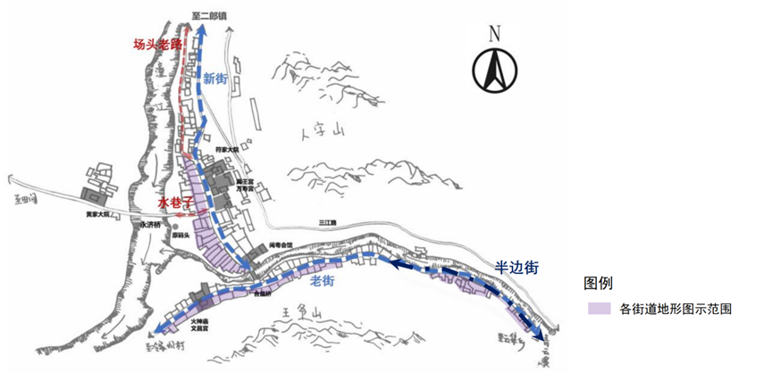
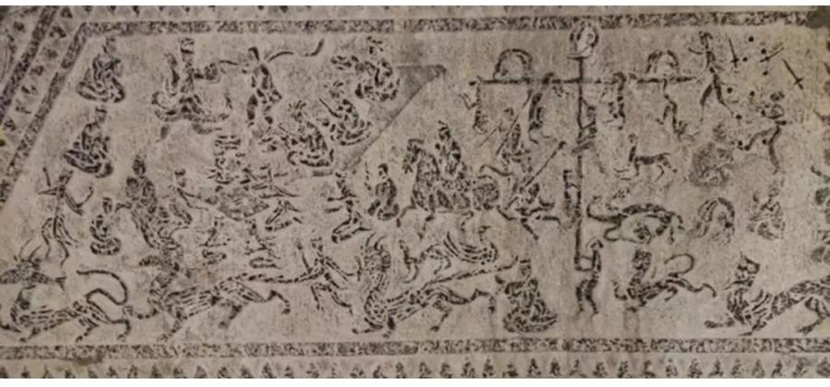
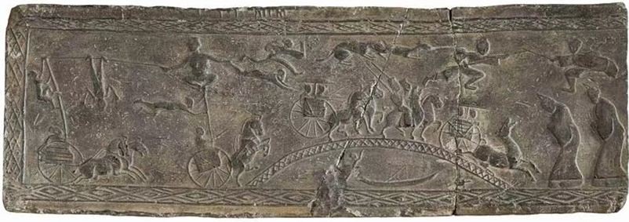

江油市青林口镇位于四川省绵阳市江油市二郎庙镇，是具有悠久历史的古镇，距江油市城区50多公里，面积约0.5平方千米。是我国历史传统村落，全国重点文物保护单位，位于江（油）梓（潼）剑（阁）三市（县）交界处，享有“川北第一古镇”“蜀道第一古镇”之美誉，也是历史上重要的交通要道。古镇依山傍水，二河汇流，群山环抱，形成了秀丽的自然景观，潼江之源马阁水流经此地，这里古木参天，绿树成荫，青山叠翠，王爷山高峻，人字山雄奇，两山矗立古镇东南，甚至坊间还流传“买不尽的青林口”之说。“潼河溯源头，想乡属帝君，山名王爷，西通江邑，北逮剑阳，南达汉昌，更近接廉泉让水，从此不劳泛舟人；梓里瞻渡口，看市本青林，路转红岩，上底雁门，东临马阁，下历龙郡，且途连匡岫，其间定有题柱客。”位于四方碑上的文字生动地说明了青林口古镇的位置。
古镇始建于元代，鼎盛于明清。明末清初，四川地区战乱频发，瘟疫流行，四川地区人口锐减。朝廷先后两道政令推动湖北、湖南、福建、广东等地的移民进入四川。他们带来了先进的农耕技术和生产经验，推动了当地的经济复苏、文化交融、社会稳定。青林口古镇历史发展的新阶段也随着移民们的到来得以展开。清朝乾隆初期陕西会馆、江西会馆先后建立。新街也初具雏形。为了链接新老二街，1791年合益桥修建，合益桥后改称红军桥。1862年闽粤会馆、文昌宫分别于新、老二街修建。至今古镇街道型制和建筑风格仍保留了明清时期的特色，街道全长约二华里，分为新、老二街，老街沿王爷山的南麓临河而建，新街建于人字山的西南麓面临潼江，两街由一座廊桥“合益桥”（现称红军桥）相连。
一、青林口高抬戏溯源
青林口镇传统的民俗活动十分活跃，逢年过节都有大量的民俗表演。最引人注目的要数已有200多年历史的高台戏，该戏种又称青林口高抬戏，是流传于川西北地区江油青林口古镇的一种民间乔妆戏表演样式，具有悠久的历史和深厚的文化底蕴，是江油市首个也是迄今为止唯一的国家级非物质文化遗产。
青林口高抬戏属于台阁艺术的一种，台阁又名抬阁、芯子（此下均称台阁），是典型的高空表演艺术形式之一，该剧种在保留台阁艺术精髓的同时，又融合了当地文昌君祭祀活动、川剧折子戏等表演元素，成为老百姓喜闻乐见的艺术形式，被誉为四川青林口古镇“四绝”（高抬戏、烧火龙、豆腐宴、白花桃）。
（一）、汉代寻橦
汉文帝刘恒统治时期，国家安定，经济繁荣，这就是历史上的“文景盛世”。文景盛世在营造良好社会环境的同时，也为汉代文化的繁荣打下了坚实的物质基础。汉百戏就是汉代文化繁荣的有力证据之一。汉百戏是民间表演艺术的泛称，《汉文帝纂要》载：“百戏起于秦汉曼衍之戏，技后乃有高絙、吞刀、履火、寻橦等也。” 这段材料明确说汉百戏起源于秦汉曼衍之战，高絙、吞刀、履火、寻橦是其主要的表演形式，高絙即在高空走钢丝，吞刀即吞刀剑的表演，履火即在火上行走、寻橦指的是表演者通常手持或头顶长竿，其他人则沿着竿子进行表演。
尤其需要注意的是“寻橦”这一艺术形式。“寻”为古代长度单位，八尺为一寻；“橦”此处指竿木，即高大的木杆或长杆。“寻橦”即一人手持或头顶长竿，另有数人缘竿而上的表演。汉代张衡的《西京赋》记录了汉代长安的繁华景象，以及当时宫廷中的娱乐活动：“乌获扛鼎，都卢寻橦。” 其中“乌获扛鼎”是由力士扛起沉重的青铜大鼎以展示其惊人的力量和强健的体魄；“都卢寻橦”所展示的正是寻橦这一娱乐活动，其中都卢指的是来自都卢国的演员，“都卢寻橦”则是由都卢国演员表演爬竿技艺，并在竿上做出各种惊险动作。
综合上述两处文字记载可以推断，在汉代已经存在以寻橦为代表的高竿表演艺术形式，并且受到了上层社会的喜爱和支持，表演场地为皇宫，观众多为王公贵族。
除了寻橦表演，这一时期还存在其它形式的高竿表演——戏车寻橦。汉代的李尤在《平乐观赋》里描绘了戏车高橦表演时的惊险的场景：“戏车高橦，驰骋百马。连翩九仞，离合上下。或以驰骋，覆车颠倒。” 在飞驰的戏车上，矗立着高高的竿子，百匹马拉着戏车风驰电掣般奔跑。与此同时，高竿上的人还在不断表演做着高难度的动作，他们像飞燕一般，在高空中翻腾跳跃，时上时下，各种惊险动作让人目不暇接。更有甚者故意让车翻覆颠倒，以此来展现他们高超的技艺。
西晋的陆翙在《邺中记》中也记载了戏车高橦的表扬场景：“立木橦其车上，长二丈，橦头安横木，两伎儿各坐一头，或鸟飞，或倒挂。” 与李尤《平乐观赋》所记载的戏车高橦不同的是，陆翙所记载的戏车高橦已经突破竖向表演，表演空间向横向拓展。在表演内容上没有较大突破，仍然以杂技为主，给人以惊心动魄的感受。
从上述三则材料可以看出，汉代寻橦表演形式多，技艺较为成熟，并已经有了在戏车上表演移动式的寻橦表演样式的存在。此外，寻橦表演也打破了空间限制，不局限于原地固定式的表演，表演的空间也向横向发展。
总得来说，汉代已经存在高竿表演的艺术形式，并且技艺较为成熟。高竿表演已经打破固定式表演，存在移动式的表演，并且不再满足于竖向表演，打破空间限制，出现横向的表演，演员在高竿上多表演杂技，为动态的表演。对表演者无特殊的要求，不过可以肯定的是其下持竿人为身强力壮之人，竿上表演者技艺高超。至于其功能并未有相关的祭祀、娱神功能的记载，其主要作用是通过演员高超技艺的展示，满足人们观赏的需要的同时也作为文娱活动丰富当时人们的文化生活。
（二）、唐代戴竿
唐代高竿表演的形式称之为“戴竿”、“上竿”、“立竿”，是大唐百戏中的重要节目，以惊险、刺激而深受民众喜爱。不少诗人都歌咏过这种表演，唐代诗人刘晏写过一首咏戴竿的七言绝句，诗题为《咏王大娘戴竿》：“楼前百戏竞争新，唯有长竿妙入神。谁谓绮罗翻有力，犹自嫌轻更著人。” 诗歌描写了当时非常有名的杂技艺人王大娘高超的杂技艺术，诗的前两句说勤政楼前的乐舞杂技中，唯有“长竿”表演技艺精湛、引人入胜，后两句写出旁观者之惊叹，进一步突出王大娘超群绝伦的技艺，据史料记载，王大娘在当时颇为有名，表演时竿上可以容纳28位表演者。稍后的王建写有《寻橦歌》：“人间百戏皆可学，寻橦不比诸馀乐。重梳短髻下金钿，红帽青巾各一边。身轻足捷胜男子，绕竿四面争先缘。习多倚附欹竿滑，上下蹁跹皆著袜。翻身垂颈欲落地，却住把腰初似歇。大竿百夫擎不起，袅袅半在青云里。纤腰女儿不动容，戴行直舞一曲终。回头但觉人眼见，矜难恐畏天无风。险中更险何曾失，山鼠悬头猿挂膝。小垂一手当舞盘，斜惨双蛾看落日。斯须改变曲解新，贵欲欢他平地人。散时满面生颜色，行步依前无气力。”这是一首乐府诗，诗歌完整的呈现了寻橦表演的整个过程：表演前的准备、表演者敏捷而高超的技艺、表演的难度、表演的效果等。
同样在苏鄂的《杜阳杂编》中也有相关表演的记载。唐敬宗生日时，伎女石火胡领着五个八九岁的养女，在百尺竿上张弓弦五条，令五女各居一条之上，穿着五色衣，执戟持戈，舞起《破阵乐》。她们俯仰来去，赴节如飞，使观众目眩心怯。石火胡的戴竿表演融合了绳伎和乐舞的元素，成为难度更大的复合杂技节目。
诗人顾况《险竿歌》也通过细腻的描写，展现了戴竿表演的惊险与美妙：“宛陵女儿擘飞手，长竿横空上下走。已能轻险若平地，岂肯身为一家妇。宛陵将士天下雄，一下定却长稍弓。翻身挂影恣腾蹋，反绾头髻盘旋风。盘旋风，撇飞鸟；惊猿绕，树枝褭。头上打鼓不闻时，手蹉脚跌蜘蛛丝。忽雷掣断流星尾，矐睒划破蚩尤旗。若不随仙作仙女，即应嫁贼生贼儿。中丞方略通变化，外户不扃从女嫁。” 诗歌生动形象地再现了宛陵女子超凡的戴竿表演技艺，她们身手矫健，或翻飞跳跃，或踏步，或盘旋飞舞。张开双臂如同飞鸟展翅，她们在长竿上灵活自如地上下翻飞，仿佛在空中行走一般。这些女子在表演中，翻身跳跃，身影如同挂在空中般自由，她们肆意地腾跃、踏步，动作敏捷而优美。她们还将头髻高高挽起，盘旋飞舞，就像旋风一样快速旋转。这盘旋的速度之快，仿佛能撇开飞翔的鸟儿；她们的灵活与敏捷，让猿猴都为之惊叹，绕着树枝飞舞也难以企及。在表演最精彩的时候，在她们头上击鼓她们也能不被鼓声所扰，手脚配合得天衣无缝，就像蜘蛛在织网上行走般稳健，尽管周围看似布满了错综复杂的“蜘蛛丝”。突然之间，她们的动作如同闪电划破夜空，迅猛无比，就像是劈断了流星的尾巴；又像是一道耀眼的光芒，划破了蚩尤旗（古代神话中的旗帜，此处可能借指某种神秘或威严的象征）的图案。如果她们不能跟随仙人成为仙女，享受那超凡脱俗的生活，那么她们或许就会选择嫁给英勇的贼影（此处“贼”可能是对英勇、不羁之人的戏称），生下同样勇敢的儿子。而宛陵的中丞（指地方长官）胸有成竹，通晓各种变化之道，他对外门户大开，不加封锁，任由这些女子自由嫁娶，展现了唐代放包容的风气。
综合上述材料可以看出，唐代的戴竿表演有汉代寻橦表演的影子，即人手持高竿表演。但也可以明显看出这一时期的表演并不仅仅满足于高超技艺的展示，对表演的观赏性以及完整性也有了新的追求。表演者的服饰更为华丽，演出的观赏性大大增强。同时，表演者开始制作并借助于一些道具，营造一定的场景，并将单纯的杂技表演放置于一定的场景中，存在一定的故事情节。除此之外，这一时期的高竿表演也融合了相关的音乐。演出的完整性也大大增强，这一时期高竿上表演的人多为童男或童女。至于其功能，仍仅仅供人娱乐，娱神、祭祀性质并不明显。
（三）宋代“台阁”介绍
尽管唐代的高竿表演的艺术性和观赏性有了较大提高，但直到宋代才成为独立的艺术形式，从高竿这一艺术形式中分离出来并以“台阁”的形式被记录在相关的文献典籍。宋代高竿表演呈现出两大特点，一是高竿表演进入“高台社火”阶段，带有祭祀功能；二是“台阁”成为独立的艺术形式。
1、高竿表演进入“高台社火”阶段
孟元老在《东京梦华录》中详细记载了高台社火表演的。其原文摘录如下：
六月二十四日州西灌口二郎生日，最为繁盛。庙在万姓门外一里许，敕赐神保观。二十三日御前献送后苑作与书艺局等处制造戏玩，如球杖、弹弓、戈射之具，鞍辔、衔勒、樊笼之类，悉绵精巧，作乐迎引至庙，于殿前露台上设乐棚，教坊钩容直作乐，更互杂剧舞旋。太官局供食，连夜二十四盏，各有节次。至二十四日，夜五更争烧头炉香，有在庙止宿，夜半起以争先者。天晓，诸司及诸行百姓献送甚多。其社火呈于露台之上，所献之物，动以万数。自早呈拽百戏，如上竿、趯弄、跳索、相扑、鼓板、小唱、斗鸡、说诨话、杂扮、商谜、合笙、乔筋骨、乔相朴、浪子、杂剧、叫果子、学像生、倬刀、装鬼、砑鼓、牌棒、道术之类，色色有之。至暮呈拽不尽。殿前两幡竿，高数十丈，左则京城所，右则修内司，搭材分占上竿呈艺解。或竿尖立横木列于其上，装神鬼，吐烟火，甚危险骇人。至夕而罢。
材料描绘了宋代一个重要的宗教节日和庙会活动，具体是六月二十四日庆祝灌口二郎生日的盛况。灌口二郎，通常被认为是道教中的神祇，与水利、农业有关，因此在民间信仰中占有重要地位。灌口二郎的生日庆典显示了古代中国民间信仰的深厚基础。庙会不仅是宗教活动，也是社区凝聚力的体现。庙宇作为宗教活动的中心，吸引了大量信徒和游客，显示了宗教信仰在社会生活中的重要性。庙会期间，各种手工艺品和食品的买卖活动非常繁荣。这不仅促进了当地经济的发展，也展示了传统手工艺的精湛技艺。例如，提到的“球杖、弹弓、戈射之具”等，都是当时流行的娱乐用品，反映了当时社会的娱乐文化和消费习惯。庙会是一个重要的社交场合，人们通过参与各种娱乐活动如杂剧、舞蹈、音乐等来增进相互之间的了解和友谊。这些活动不仅丰富了人们的精神生活，也加强了社区的凝聚力。同时，传统技艺的展示：庙会上还有各种表演，如杂技、武术、戏剧等，都是中国传统技艺的展示。这些表演不仅技艺高超，而且往往蕴含着深厚的文化内涵，如“装神鬼，吐烟火”等表演，既有娱乐性，也带有一定的宗教色彩。其中包括上竿表演。相较于其表演形式，此处我们更应该关注的是表演时间场景。相较于前期在皇帝寿辰、宴会上表演，这一时期的表演显然打破了单纯娱人的色彩，带有娱神、祭祀色彩。文本所展示的高竿表演是在二郎神的诞辰上，其表演的初衷已不再单单只是娱人，显然已经带有娱神以及祭祀色彩。同样也可以看出，高竿表演在这一时期已经与社火活动相勾连，成为社火这一类祭祀活动的一部分。
2、“台阁”词源溯源
南宋周密《武林旧事》第一次出现“台阁”：“户部点检所十三酒库，例於四月初开煮，九月初开清，先至提领所呈样品尝，然后迎引至诸所隶官府而散。每库各用匹布书库名高品，以长竿悬之，谓之‘布牌’；以木牀铁擎为仙佛鬼神之类，驾空飞动，谓之‘台阁’。”根据此处记载，可以确定台阁表演的基本形式：在木床上放置铁架，演员扮演成神仙、佛祖、鬼神等形象，在铁架上表演。
《梦粱录》中有多处关于台阁的记载：
初八日，钱塘门外霍山路有神日祠山正佑圣烈昭德昌福崇仁真君，庆十一诞圣之辰。……其日都城内外，诣庙献送甚繁……台阁巍峨，神鬼威勇，并呈于露台之上。自早至暮，观者纷纷。
三月三日上巳之辰，曲水流觞故事，起于晋时。……兼之此日正遇北极佑圣真君圣诞之日，佑圣观侍奉香火，其观系属御前去处，内侍提举观中事务，当日降赐御香，……诸军寨及殿司衙奉侍香火者，皆安排社会，结缚台阁，迎列于道，观睹者纷纷。贵家士庶，亦设醮祈恩。贫者酌水献花。
临安府点检所，管城内外诸酒库，每岁清明前开煮，……各库预颁告示，官私妓女，新丽妆着，差雇社队鼓乐，以荣迎引。……次八仙道人、诸行社队，如鱼儿活担、糖糕、面食、诸般市食、车架、异桧奇松、赌钱行、渔父、出猎、台阁等社。
此处涉及到的三次台阁表演其出现的时间及其类型分别是：
| 原文 | 时间类型 |
|---|---|
| “钱塘门外霍山路有神日祠山正佑圣烈昭德昌福崇仁真君，庆十一诞圣之辰” | 诞辰之日 |
| “三月三日上巳之辰……兼之此日正遇北极佑圣真君圣诞之日” | 诞辰之日 |
| “每岁清明前开煮” | 特殊节日 |
三次台阁表演都在诞辰、清明等特殊日子，带有祭祀娱神性质。这也证实了这一时期台阁在经历了高台社火阶段后表演性质发生转变，不再是单纯娱人的表演，开始带有祭祀、娱神色彩。
在表演上有鼓乐“差雇社队鼓乐”，演员也多扮演成仙佛鬼神“神鬼威勇”。从“迎列于道”“诸行社队”可以看出台阁表演延续了汉代戏车高橦移动表演的形式采用沿街巡游的形式表演。
其中“观者纷纷”“观睹者纷纷”可见观众之多，台阁表演受到大众的喜爱。
总得来说，高竿表演在宋代走上了新的历史舞台。一方面是发展出新的表演形式并被记录为“台阁”；另一方面表演性质也由单纯的娱人转向娱神，带有祭祀色彩；同时在表演形式也有大概的雏形：即在木床上固定铁架，表演者扮演为仙佛鬼神等角色在铁架上表演，并通过移动木床沿街巡游式表演。此外，表演还融合了鼓乐表演。这一时期的台阁艺术具有较高的观赏性，表演的整体性和完整性也得到了保证。受到人们追捧和喜爱。
四、明代“台阁”介绍
到了明代，台阁艺术无论在表演上还是功能上显然更明确，其影响范围也更广，在全国各地都有不同的台阁样式。
刘侗、于奕正在《帝京景物略·弘仁桥》有载:
又夸罐者，为台阁。铁杆数丈，曲折成势，饰楼阁崖木云烟影，层置四五儿婴，扮此剧演其法：环铁约儿腰，平零儿尻，衣彩饰其外，杆暗从衣物错乱中传下。所见云梢烟缕处，空坐一儿，或儿跨像马，蹬空飘飘。道旁动色危叹，而坐实无少苦。人复长杆掇饼饵频频啖之。路远，日风渲拂，儿则熟眠。
《帝京景物略》主要记载的是北京及其周边地区的景观及风俗人情，弘仁桥乃是今天北京周边通州马驹桥。刘、于二人的记载详细再现了当时北京地区台阁表演的具体情形。通过此处记载可以肯定的是北京地区的台阁表演在形式上仍然采用在木床上安装铁杆，并借助一定的道具在铁杆上营造一定的场景，再让演员置身于高空的场景中表演。
值得注意的是这一时期的表演并不存在杂技表演。“层置四五儿婴”“儿则熟眠”两处可以看出表演的演员主要是婴儿，婴儿并不具备表演杂耍的能力，且在表演后期“儿则熟眠”这一举动可以看出此地对于台阁表演的动作要求并不高，甚至不存在前期的杂技表演。
相比而言这一时期台阁表演对绑扎技艺要求反而更高。不但有特制的工具，也极力保证演员的安全性以及舒适度，同时也关注到观众的视觉体验。“环铁约儿腰，平零儿尻，衣彩饰其外，杆暗从衣物错乱中传下。所见云梢烟缕处，空坐一儿，或儿跨像马，蹬空飘飘。道旁动色危叹，而坐实无少苦。”婴儿们的腰被特制的铁环束缚绑扎住，臀部被平稳地安置在铁杆特制的支撑点上。演员们的服饰被装饰得五彩斑斓，用来掩盖内部的支撑结构，铁杆也掩藏在服饰之间的缝隙之中。整体而言为观众营造出云雾缭绕处似有小孩悬空而坐，或者小孩骑跨在马匹上脚踏虚空，如仙人下凡的场景。这一时期台阁表演的观赏性主要表现在对演员悬空，飘飘若仙的画面的欣赏。
张岱《陶庵梦忆》有载：
枫桥杨神庙，九月迎台阁。十年前迎台阁，台阁而已；白骆氏兄弟主之，一以思致文理为之。扮马上故事二三十骑，扮传奇一本，年年换，三日亦三换之。其人与传奇中人必酷肖方用，全在未扮时一指点为某似某，非人人绝倒者不用之。
壬申七月，村村祷雨，日日扮潮神海鬼，争唾之。余里中扮《水浒》……分头四出。寻黑矮汉、寻长大汉、寻头陀、寻大胖和尚、寻茁壮妇人、寻姣长妇人、寻青面、寻歪头、寻赤发、寻美髯、寻黑大汉、寻赤脸长须。大索城中，无则之廓、之村、之山僻、之邻府州县，用重价聘之，得三十六人。梁山泊好汉，个人呵活，臻臻至至，人马称妮而行，观者兜截遮拦。
张岱《陶庵梦忆》主要展现的是江南地区尤其江浙一带的社会生活和文化习俗。通过两处记载可以看出明代江浙一带的台阁表演的情况。
两处关于台阁表演的记载侧重点有所不同，但仍可以看出这一时期台阁表演的相关信息。形式上是木床铁杆的高空表演样式，并且借助马移动木床达到移动式表演的目的。表演内容上，剧目年年有更新且内容多为对传奇的演绎，“扮传奇一本”“余里中扮《水浒》”是对这一观点的佐证。江浙地区对演员也提出了新的要求。“其人与传奇中人必酷肖方用”以及张岱第二则的记载中都可以看出这一时期江浙地区对演员的要求之高，需要演员与故事情节中的人物达到形似、神似。
值得关注的是，在张岱的第二处记载中点明了此次台阁表演的目的——“村村祈雨”，说明这一时期该地区的台阁表演有娱神祈福的目的。“日日扮潮神海鬼”“得三十六人”也可以看出这一时期江浙一带台阁表演的规模较大。
明代田汝成《西湖游览志馀》中更是记载了江浙一带某次台阁表演的时间为正月十五上元节。同时，“或祭赛神庙，则有社火、鳌山、台阁、戏剧、滚灯、烟火” 根据这一则材料所载可以看出台阁表演主要在祭祀活动上。
综合几处材料，可以总结出明代台阁表演的整体情况。首先是台阁表演的范围扩大，南北方都有台阁表演并有相关记载。其次，在表演形式上，这一时期台阁表演仍延续着以木床铁杆为舞台，并采用巡游移动式的表演形式。通过独特的绑扎技艺让演员呈现出悬空的效果以提高观赏性。在表演内容上主要是对传奇、小说情节的演绎，演员的动作少且难度小。这一时期对演员的外形要求提高，要求演员与表演剧目中人物的形似神似。台阁表演的功能带有娱神祭祀色彩，出现在各种祭祀、祈祷活动上。
五、清代台阁介绍
清代是台阁发展的高潮。上至官府、皇族，下至百姓都表示出对台阁艺术的喜爱。
在清代的诸多作品中都从不同角度展开了对台阁表演的记叙。如：
李斗《扬州画舫录》：厉坛即城隍行宫，每岁清明、中元、下元三节，……及暮，台阁伞盖，彩绷幡幢，小儿玉带金额，白脚呵唱，站立人肩，恣为嬉戏；或带锁枷诣庙，亦免灾难。银花火树，光焰竞出，爆竹之声发如雷，一时之盛也。
江苏巡抚陈洪谋《风俗条约》：酬神结会，误农耗财……台阁杂剧，极力装扮。今日某神出游，明日某庙胜会。男女奔赴，数十百里之内，人人若狂。一会之费，动以千计，一年之中，常至数会
两处记载说明当时台阁这一艺术形式得以延续，人们也激励追捧这一艺术形式。“极力扮演”“男女奔赴，数十百里之内，人人若狂”巡抚陈洪谋的两处用词体现出当时人们对台阁表演的拥护、喜爱。不但要大费周章的扮演，表演时更是人人出动欣赏台阁表演。“今日某神出游，明日某庙胜会”可以看出台阁表演主要在祭神、庙会上表演展示。
路工选编《百戏竹枝词》：作台阁状，中设机械，扮十馀岁童，为杂剧，数重，犹如掌上见舞人者，甚可观。
《百戏竹枝词》主要记载的是清代北京、河北一带的民间歌舞、杂乐、杂戏的表演情况。此处的记载主要是台阁表演的情景：他们构建了类似台阁形状的舞台布景，并在其中设置机关。让十多岁的孩童在台阁装置上表演杂剧，台阁层层叠叠，让人感觉好像是在手掌上观看演员的舞蹈一样，形象生动，让人叹为观止。其中“扮十馀岁童”“为杂剧”“数重” 三处点明了北京、河北一带台阁表演的基本形式：十余岁的孩童，在台阁装置上借助相关的道具表演杂剧中的相关内容，并且台阁装置层数高。无论是在表演形式上还是在表演内容上与明代区别不大，都以铁杆木床为舞台，移动式地表演。需要补充的是台阁装置的移动主要由人力完成，并且在铁杆顶部运用一定的道具营造场景。在视觉上营造出视觉差带给观众惊奇的感受。表演内容上多是对戏曲杂剧的表演。
洪亮吉《南楼忆旧诗四十首之三十一》：才过中元又下元，赛神箫鼓巷头喧。来年台阁多新样，都插宫花扮杏园。其注曰：赛神会中每用七八人扛一桌，上扮金元院本诸故事，名日“台阁”。
洪亮吉的这首诗通过对中元节、下元节以及赛神活动的描写，展现了清代民间节日庆典的热闹氛围和丰富多彩的民俗文化。诗中不仅表达了对传统节日的重视，也反映了民间艺术的繁荣和创新。这首诗具有很高的民俗学价值，为我们了解清代的社会生活和文化提供了宝贵的资料。诗人展望来年的台阁表演，提到会有许多新的样式，表演者会插上宫花，装扮成杏园的样子。可见，这时期的台阁表演内容更加丰富，除了传统的杂技、舞蹈、戏剧等，还会有宫花和杏园的装扮 。宫花是宫廷中常用的装饰品，象征着高贵和美丽，杏园则象征着美好的自然景观或特定的文化意象。
结合上述材料可以肯定的是，在清代台阁艺术的形式已经确定，并走向繁荣。在不同地区有不同的艺术表演形式，但都是在台阁这一艺术形式的基础上创新改编而来。采用人力扛的形式让木床铁杆装置实现移动表演的要求，儿童在铁杆上完成相关动作表演。表演的内容主要是相关的传奇、小说中的某一场景。表演借助服装掩盖以及特殊的绑扎技艺在视觉上营造出视觉差，给观者悬空之感。
台阁艺术形式的定型为青林口高抬戏的诞生打下了基础。但是关于青林口高抬戏具体的诞生众说纷纭，主要有以下几种观点。观点一：唐楚轩在《四川省江油市青林口乡高抬戏研究》中认为：青林口高抬戏是一位叫符璋的人在江浙一带做官时，看到台阁表演并喜爱，从而带回青林口古镇并在古镇仿制产生。唐说没有提供有力的佐证材料。
2018年中华书局出版了由温州市图书馆编纂，陈光熙点校的《符璋日记》，据该书记载，在青林口古镇确实有“符家大院”，并且相关记载表明符璋确实为青林口古镇之人。虽然符璋确为青林口古镇之人也确实有在杭州做官的证明，但仍疑点重重。理由如下：《符璋日记》主要记载的是1893年至1929年期间，符璋为官时的家事、公事、国事，其中也不乏有关于清末民初江南社会风俗、政坛学界的记载。符璋为官期间，青林口古镇的格局已经奠定，无论是文化、经济都已经有其规模和结构模式，是否接受台阁这一全新的艺术形式呢？
根据清朝官员的假期设置，清代官员的假期最长的是封印假，长达一个月。若符璋做官期间回到青林口古镇仿制台阁这一艺术形式，在这一月符璋需往返古镇与杭州一次，并且在古镇毫无台阁形式的基础上完成大方桌、前箍、后箍、服装等表演道具的制作，并完成表演。按照当时交通发展情况，单是花在旅途上的时间就耗去大多数时间。且不论符璋是否具有因自己喜爱而鼓动古镇居民仿制高抬戏的能力。假设仿制成功，古镇居民是否能够在符璋不在古镇的情况下组织高抬戏的表演？古镇居民的文化自觉是否能够支持高抬戏走向成熟？又如何保证其没有因为战争原因而破坏延续性？
观点二：据青林口高抬戏国家级非物质文化遗产传承人邓均朝先生口述，在清朝“湖广填川”这一移民活动中，台阁随大量的广州移民进入了青林口。青林口高抬戏确实是随“湖广填川”这一移民活动跟随闽粤一带的移民进入青林口古镇，并不断融合当地文化发展才有了现在我们所见到的青林口高抬戏。这一观点虽也没有明确的文献记载，但是相关的历史事件以及广州一带的台阁形式与青林口高抬戏二者形式上的相似性可以佐证这一观点。理由如下：首先，移民背景真实存在。这时期由于各种自然灾害以及战争导致四川地区人口锐减，为了恢复经济发展生产，清朝官方推动移民运动，在移民运动结束时，移民已经占到四川人口的60%-70%，其中60%为湖广籍的移民，这也是这次移民活动被称为“湖广填川”的重要原因。
大量的移民涌入，不但推动了经济的发展，也必然推动精神文化生活的发展。而大量的湖广移民也是推动青林口古镇文化受到湖广地区文化影响较大的重要原因。张家鹏、王祥在其主编的《中华文化概论》中讨论了民俗传播的问题，两位学者指出民俗传播的方式主要是民族迁徙和文化采借：“其一是民族迁徙，带来了民俗的迁移；其二是文化采借，造成了民俗的扩散。” 此外，从其他地方的民俗活动的诞生也可以佐证民俗活动可以通过民族迁徙活动传播，如：山西偏关县、河曲县移民推动了内蒙古南部移民信仰习俗的融合，蒙民也接受了汉族移民所带来的龙王信仰、关帝信仰等。
在青林口古镇也有相关建筑可以说明青林口古镇受到移民影响大。在古镇有广西会馆、江西会馆、闽粤会馆，虽然由于古镇建设和相关灾害，广西会馆、江西会馆已成为历史，但是诸多会馆的存在可以说明当时青林口古镇移民数量多，移民为古镇带来的影响深。
其次，青林口高抬戏与移民地区的台阁艺术形式相似度较高。青林口古镇供奉着文昌帝君，为了庆祝文昌帝君的诞辰，得到文昌帝君的保佑、庇护。青林口古镇的居民在农历二月初二举行盛大的庆典活动为文昌帝君庆祝诞辰。
农历二月初二凌晨，表演高抬戏的童男童女就按照不同角色化上了不同的妆容，穿上了相应的衣服。在多位大汉的协助下，传承人终于绑扎好了每一台高抬。在川剧锣鼓营造的锣鼓喧天的背景下，舞狮率先从文昌宫走出，紧接着是龙灯、采莲船，青林口高抬戏也随着巡游队伍压轴登场。一台台高抬戏被抬出文昌宫，沿着新街巡游展示。《穆柯寨》、《送京娘》、《李白醉写》、《霸王别姬》等剧目先后入场，街道上人头涌动，但每一位观众都观看到了青林口高抬戏的表演，这也是青林口高抬戏的精髓所在——“戏看人”。
青林口高抬戏的艺术特色也很明显，除了台阁艺术本身所具有的“戏动人不动”“戏看人”之外，青林口高抬戏在鼓乐上采用川剧锣鼓，剧目上大多吸收借用川剧折子戏中的剧目。
青林口高抬戏选择川剧锣鼓作为表演的音乐，除了川剧锣鼓本身所具有的即时性、节奏性强的特点之外，二月初二巡游这场祭祀活动本身也深刻地影响着青林口高抬戏的鼓乐。二月初二巡游表演的队伍走在最前面的是舞狮，舞狮所采用的鼓乐就是川剧锣鼓，为了保证演出整体的统一性和观赏性，青林口高抬戏也采用川剧锣鼓。
青林口高抬戏在剧目上吸收借鉴川剧折子戏，如《白蛇传》、《霸王别姬》等。高抬戏作为移民文化进入四川，在其发展中要适应当地的文化环境，要受到当地人的喜爱，迎合当地的文化市场环境才能有长足的发展。由此青林口高抬戏吸收借鉴川剧折子戏中的精髓，诞生了一系列相关的剧目，并延续至今。
除了对四川地区川剧文化的融合，近年来青林口高抬戏也结合江油本地以及青林口古镇当地的文化融合创新，诞生出新的剧目。
青林口古镇地处四川省江油市，在江油市还有一位文化名人——李白，李白已经成为江油市的文化符号，并且深刻、广泛地影响着江油市当地的文化，青林口高抬戏也受此影响。青林口高抬戏结合“力士脱靴”这一故事创新出剧目《李白醉写》。也根据李白创作的文学作品《静夜思》创造出剧目《太白邀月》。两台高抬展示了青林口高抬戏本身的艺术魅力的同时也突出了江油市当地的李白文化。此外，青林口古镇有独具特色的“四绝”——青林口高抬戏、白花桃、舞火龙、豆腐宴。当地居民以贩卖桃子为生，每到春天百花盛开之时青林口古镇也变成桃花的世界，遍地桃花盛开，也因此新一代传承人创新出更为独特的《青林桃花仙》一幕剧。
从整体看来，青林口高抬戏有以下特色：第一、表演时间。青林口高抬戏主要是为了纪念文昌帝君的诞辰而表演，主要是在农历二月初二表演。随着时代的发展，青林口高抬戏也在“桃花节”、“李白文化节”、“非遗文化节”等特殊节日上表演。第二、演员。为了保证演出的安全性，青林口高抬戏的演员多为8-10岁童男童女，抬高抬的多为壮年男子。第三、表演形式。青林口高抬戏采用只演不唱、沿街巡游表演的形式。第四、表演内容。在剧目上，青林口高抬戏剧目来源广泛。主要来自川剧折子戏，如《秋江》、《踏伞》。当然也有《桂英打雁》、《穆柯寨》等剧目。青林口高抬戏也有相关的鼓乐，主要是川剧锣鼓。
而广州一带的台阁艺术形式更为多样。广州将台阁称之为“飘色”，“飘”指脱离地面，展现凌空之美；“色”原意为“饰”，后延伸指尽心巧妙伪装。“飘色”二字形象生动地总结出了台阁这一艺术形式的特色和形态。广州地区飘色形式主要有：沙湾飘色、乾务飘色、黄圃飘色、台山浮石飘色、信宜飘色、吴川飘色、博美飘色等。下面分别介绍种飘色，并在此基础上总结其共同特点。
第一、沙湾飘色。沙湾飘色在明末清初便已有雏形。沙湾飘色主要是在每年农历正月初二北帝诞祭祀活动上表演。表演主要由8-10岁小演员借助相关道具扮演某个故事、传说、戏曲等内容。主要剧目有《哪吒闹海》、《黛玉葬花》、《黄莺惊梦》等。巡游队伍中除了飘色表演还有为飘色队伍做乐的鼓乐队，以及舞狮队、爆竹。巡游队伍要经过村子里每一个姓氏的宗祠，历时约3个小时。第二、乾务飘色。乾务飘色主要分布在乾务镇乾东、乾西、乾北三村。至于其起源，认为是明朝天启年间梁国栋出任江西省彭泽县令，告老还乡后依照江西飘色仿制。每年孟春季节以及乡中庆喜之日都会举行乾务飘色的表演活动。乾务飘色主要由7-10岁的小孩扮演民间故事或历史典籍中的人物，并由壮汉抬着色柜在街上巡游表演。表演时，乾东、乾西、乾北三村分别表演不同的剧目，分别是《喜鹊练梅》、《八仙闹东海》、《白蛇传》。表演队伍服装艳丽，并且也有鼓乐作伴。第三、黄圃飘色。黄圃飘色在明末清初已有雏形。其表演时间是在每年农历三月初三北帝诞，届时人们便举行飘色出巡，祈求北帝保佑风调雨顺。出巡时有醒狮、秧歌、锣鼓等为伴。黄圃飘色多为单个色芯，以历史典故、民间传说、戏曲故事为表演主题，为保证整个剧目小巧、玲珑、飘逸，表演者多为2-3岁的小女孩。第四、台山浮石飘色。台山浮石飘色始于明末清初，在清光绪十四年便早已有记载，距今已有三百余年的历史。台山浮石飘色表演主要在北帝诞活动上表演。每台飘色由两名8-10岁儿童扮演历史故事、神话传说，主要的剧目有《平贵别窑》、《穆桂英挂帅》、《青蛇白蛇》等。表演时，巡游队伍有旌旗、罗伞、锣鼓、瑞狮、色标开道，北帝雕像紧随其后，其后又有八仙贺寿、八音管弦相随，队伍庞大。整个巡游队伍要游遍全村十坊，再回到庙中，以祈求人畜兴旺、风调雨顺、五谷丰登。第五、信宜飘色。关于信宜飘色的起源众说纷纭，但是可以肯定的是，信宜飘色在当地已流传三百余年。信宜飘色表演时间主要在春节期间。信宜飘色表演主要由4-10岁的小演员表演，对小演员的外貌气质、体重都做出了要求。信宜飘色融魔术、杂技、音乐、舞蹈于一体，表演的剧目主要来源于神话传说、历史故事、戏剧人物。主要的剧目有《嫦娥奔月》、《哪吒闹海》等。相较于其他飘色形式而言，信宜飘色在体量上更大，有独有的十八人大型飘色。第六、吴川飘色。吴川飘色与“游神赛会”有关，主要是是民众祈求平安、赐丰年的祭神求福活动。吴川飘色主要在元宵节前后表演，持续时间较长，分三天巡游。表演主要由6-12岁的小演员完成，表演内容多为神话、传说、历史人物，如《白蛇传》、《唐僧取经》、《康熙皇朝》等等。巡游表演时以吴川本地特有的“锣鼓班”开道，彩旗、幡伞、八宝等仪仗队紧随其后，且每隔十组飘色配一套“锣鼓班”（八音班）。吴川飘色将声、色、艺完美交融在一起，场面壮观，气氛热烈，深受广大人民群众喜爱和追捧。第七、博美飘色。据考证，博美飘色起于明洪武十二年，距今已有六百三十余年历史。表演主要由8-18岁小演员完成，男女不限，每台飘色需要演员3-8人。每逢佳节便举办飘色巡游活动。表演内容多取材于正字戏、白字戏、西秦戏传统剧目和传说故事等，常见的剧目有《穆桂英挂帅》《凤仪亭》《白蛇传》等。博美飘色还融合声、色、艺。
综合上述七种飘色表演，对其进行分析可以总结归纳出广州飘色表演的特点：
首先表演时间。广州飘色表演由于地域不同表演时间有所与不同，但是大多都是在北帝诞这样的特殊日子或者其他重大节日上表演；其次、演员。为了演出的整体观赏性，广州一带飘色表演都选择容貌俊美、体重较轻的小演员。小演员的年龄大多为8-10岁的童男童女；再次、表演形式。表演者站在色柜上，由4-8名大汉抬着或是推着巡游式表演，并且只演不唱。表演时有鼓乐队作伴，巡游队伍还包括其他诸如舞狮等表演；最后、表演内容。在剧目上，广州飘色剧目多来自各种传奇、神话等传统剧目。比较有代表性的是《桂英打雁》《穆桂英挂帅》《白蛇传》等；
综合上述内容，从表演时间、表演形式、表演内容、表演道具四个方面来看，青林口高抬戏与广州飘色存在诸多相似之处：
第一、祭祀功能相同。广州飘色形式多样，但大多数飘色表演都有与各种祭祀活动、节日庆典活动密不可分：
《乾隆嘉应州志·风俗》：立春先一日，守土官率僚属， 迎勾芒土牛于东郊各坊，饰男童， 扮故事，以兆丰登。棚台阁，周游 城市，士女纵观。次日，鞭春打土牛， 取其土置牛栏上，牛不疫，以作龟 蕃六畜。
《南溪县志·风俗》：正月立春先一日，县令率僚迎 春于东关外，祀勾芒。春官着彩衣 跳舞，说吉利话，街市诸色人演高 装，舞烛龙为前导……至望日为上 元……城市皆以纸糊竹龙、竹马及 鱼虾、狮象，燃烛其中，鼓乐喧阗， 百戏皆作，谓之闹元宵。
《岭南文化书系·沙湾飘色》：各地的飘色虽然名称不同，但 其表演的时间、场合、形式、内容与 特点却基本相同：常于神诞日、节 日或重大庆典日举行
三处关于风俗的记载都可以看出广州地区的飘色表演都是在特殊的时间节点。这与青林口高抬戏的表演时间类似。两者独特的表演时间说明，无论是青林口高抬戏还是广州地区飘色都带有祭祀祈福之意，性质上是娱人与娱神兼备。
第二、表演形式相同。无论是青林口高抬戏还是广州飘色在表演上都采用巡游的方式表演。巡游队伍的安排上并非只有青林口高抬戏、飘色的队伍，往往有舞狮等表演在巡游队伍之前。演员并无唱词，只有相关动作的展示。虽然演员只演不唱，但是两者表演时都将锣鼓融入表演中，进一步提高了表演的观赏性。
第三、表演道具相同。
青林口高抬戏和广州飘色道具都涉及到表演的展台以及假脚。
关于表演的展台。青林口高抬戏将其称之为“高抬桌”，广州飘色将其称之为“色柜”。无论是“高抬桌”还是“色柜”其结构均相同，都在木制平台中央安装铁杆，在表演时将演员通过绑扎技艺固定在铁杆上。
关于表演时的假脚。无论是青林口高抬戏还是广州地区的飘色都营造一种凌空之感。为了达到凌空效果，在绑扎时除了将演员固定在中央的铁杆上，还借助假脚这一道具营造凌空之感。
此外，两种剧目还根据具体的剧目设置相关的道具，此处不一一赘述。
第四、表演剧目有相同剧目：
广州一带的飘色中较为经典的剧目涉及到的人物主要有：白娘子、穆桂英。在青林口高抬戏相关的剧目中也涉及到这两位人物，分别是《白蛇传》《桂英打雁》《穆柯寨》。
综合上述内容，无论是在地域移民活动本身还是青林口高抬戏与广州飘色在表演上的相似性都可以看出二者一脉相承的关系。我们也能窥见青林口高抬戏与这场移民活动的关系：明清时期，四川地区由于战乱、各类天灾人口剧减。为了推动四川地区的经济、农业发展，清政府颁布移民政策，鼓励湖广、闽粤一带的人民进入四川。由于得天独厚的地理位置以及经济发展基础，青林口古镇吸引力大量的移民进入。移民的进入不但推动了青林口古镇的经济发展，也带动了古镇文化走向新的台阶。
广州一带的移民带来了台阁这一艺术形式，为了推动台阁艺术形式适应当地文化、地域等条件，被当地居民接受，移民保留了飘色的精髓——以木桌为舞台，将童男童女固定在木桌铁杆上，多人前后抬杠，沿街巡游的表演形式。在保留其精髓的同时也不断更新发展。
首先是形式上的更改。广州地区的飘色体量上普遍较大，整体更宽也更高。但是青林口古镇无论是新街仅3有米，老街仅有2米，街道两边住宅较高。古镇的格局不支持大体量的台阁形式的表演，故而青林口高抬戏在体量上较小，宽度小，层数少。
根据原有剧目进行创新以符合四川地区人民的审美，如：《白蛇传》《桂英打雁》《穆柯寨》。此外，为了更符合四川地区人民审美，还根据川剧折子戏创新出一系列剧目，如：《霸王别姬》《长生殿》《刘海砍樵》等。随着青林口高抬戏不断发展走向成熟，青林口高抬戏传承人还根据江油、青林口古镇文化创新出了带有当地特色的剧目，如根据江油李白文化创新出《太白邀月》《李白醉写》；根据青林口古镇“四绝“之一的白花桃创新出剧目《青林桃花仙》，又将青林口红军文化融入青林口高抬戏中创新出剧目《红军长征》。2007年，青林口高抬戏更是将川剧吐火与青林口高抬戏中的剧目之一《穆柯寨》相结合，在广东表演，并获得了“山花奖·金奖”。
青林口高抬戏从广州一带走进青林口古镇，并根据当地文化以及地理环境不断发展，成为青林口古镇的一绝，也成为江油地区一张独特的文化名片。